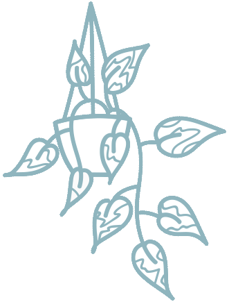
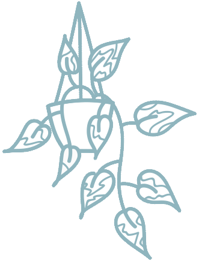

JAMES
HUA.


 

BERKELEY
BOWL.
Comprehensive brand redesign strategy & visuals that reimagines the entire shopping experience for Berkeley Bowl customers.
This case study examines the current brand identity and pitfalls of the current brand experience. The rebrand explores ways in which the emotionally exhausting task of shopping at Berkeley Bowl can turn into stimulating experience. Shoppers will feel inspired when planning a grocery trip, engaged while shopping, then satisfied when coming home.
Skills
Branding
Brand Strategy
Stakeholder Mapping
Personas
UI Design
Programs
Figma
Adobe Photoshop
Adobe Lightroom
Timeframe
Oct.'22 -
Dec.'22

The Visuals


Taking a look at the current branding, you can notice:
- - a charming, but outdated logo
- - unremarkable typefaces
- - a lack of consistency in colors
It is clear that the brand presence of Berkeley Bowl is neither coherent nor well established, which negatively affects the brand’s presence in the grocery-sphere. The store becomes visually indistinguishable from the competition in terms of the color space. Berkeley Bowl is so unique — but why would someone choose them over the next grocer if they all look the same outside?
Looking at potential color spaces, yellows, blues, pinks and browns are relatively unexplored. By maintaining the original green to connote nature and produce, and incorporating pink and brown as accent colors, the brand better emphasizes the variety of produce that sets it apart from the rest.
Pairing a heavily flourished display serif typeface with a clean sans serif strikes a balance between the quality and accessibility that Berkeley Bowl provides.
We can still uphold it’s history while providing a fresher, more modern take that elevates the brand in a distinguishable way.

The Experience
The grocery store is often lauded for it’s sustainable practices, local & quality produce, and wide variety of products from many cultures. It is a food-enthusiast's dream because of all the niche products they have to offer. You will always discover something new each time you explore Berkeley Bowl. Unfortunately, it has also been described as “an overwhelming and chaotic experience”. With a clear lack of overhead signage, shelves overflowing with products, and tight corridors, it’s no wonder why some customers get “headaches when [they] need to plan a trip there”.


A map of functional, financial, emotional, identity and meaningful value between Berkeley Bowl and its stakeholders illustrates why customers decide to shop at there. The grocery store provides deeper levels of value over its competitors. Berkeley Bowl is particularly effective in establishing a loyal customer base because shopper choose to identify as ‘Berkeley Bowl Shoppers’. They choose to travel long distances because of how the products offered at Berkeley Bowl fit into their lifestyles in meaningful ways. It is important to keep this in mind and build upon these types of value in the new experiences we design.
However, who exactly is this experience being designed for? Berkeley Bowl services many individuals from different backgrounds. To fully craft this experience, we will focus on adventurous individuals who love exploring new cuisines. These are the individuals who derive the higher forms of value from the grocer.

This emotional waveline encapsulates the full extent of emotions that customers feel on their journey. Let’s define the customer journey as one that begins with planning a trip and ends with unbagging groceries at home. Where can we improve the experience?
Customers start off interested in acquiring the specialty items Berkeley Bowl has to offer, but they soon feel tired and stressed upon arrival because they have to travel through city traffic to arrive. Those negative emotions melt into excitement and wonder because shoppers are greeted with an abundance of attractive products: fresh produce, 20+ apple varieties, local cheeses, rare Asian herbs and vegetables. There is so much more to explore. They soon become overwhelmed when they have to focus and knock out their grocery list because of the overcrowded shelves, lack of proper signage and tight aisles. Finally, they can get curious and browse around the store. When it comes time to check out, they feel bored -- it’s crowded and they get impatient and stressed. When they check out, they feel relieved, tired and accomplished.
In this chart, positive emotions are plotted relatively higher than negative ones. There is potential for improvement at 3 key areas: pre-arrival, shopping & leaving the store. Let’s dig into key touchpoints turn these areas of pain into engaging experiences.
The Reimagination


Interactive Website Prototype
Hover, click and explore the new digital experience.